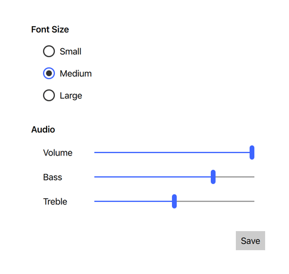
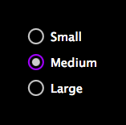

Universal Style
The Universal Style is based on the Microsoft Universal Design Guidelines. More...
| Import Statement: | import QtQuick.Controls.Universal 2.12 |
| Since: | Qt 5.7 |
Attached Properties
- accent : color
- background : color
- foreground : color
- theme : enumeration
Attached Methods
- color color(enumeration predefined)
Detailed Description
The Universal style is a device-agnostic style based on the Microsoft Universal Design Guidelines. The Universal style has been designed to look good on all devices, from phones and tablets to PCs.
 The light theme of the Universal style. |
The dark theme of the Universal style. |

To run an application with the Universal style, see Using Styles in Qt Quick Controls.
Note: The Universal style is not a native Windows 10 style. The Universal style is a 100% cross-platform Qt Quick Controls style implementation that follows the Microsoft Universal Design Guidelines. The style runs on any platform, and looks more or less identical everywhere. Minor differences may occur due to differences in available system fonts and font rendering engines.
Customization
The Universal style allows customizing four attributes, theme, accent, foreground, and background.

Both attributes can be specified for any window or item, and they automatically propagate to children in the same manner as fonts. In the following example, the window and all three radio buttons appear in the dark theme using a violet accent color:
import QtQuick 2.12 import QtQuick.Controls 2.12 import QtQuick.Controls.Universal 2.12 ApplicationWindow { visible: true Universal.theme: Universal.Dark Universal.accent: Universal.Violet Column { anchors.centerIn: parent RadioButton { text: qsTr("Small") } RadioButton { text: qsTr("Medium"); checked: true } RadioButton { text: qsTr("Large") } } } |  |
In addition to specifying the attributes in QML, it is also possible to specify them via environment variables or in a configuration file. Attributes specified in QML take precedence over all other methods.
Configuration File
| Variable | Description |
|---|---|
Theme | Specifies the default Universal theme. The value can be one of the available themes, for example "Dark". |
Accent | Specifies the default Universal accent color. The value can be any color, but it is recommended to use one of the pre-defined Universal colors, for example "Violet". |
Foreground | Specifies the default Universal foreground color. The value can be any color, or one of the pre-defined Universal colors, for example "Brown". |
Background | Specifies the default Universal background color. The value can be any color, or one of the pre-defined Universal colors, for example "Steel". |
See Qt Quick Controls Configuration File for more details about the configuration file.
Environment Variables
| Variable | Description |
|---|---|
QT_QUICK_CONTROLS_UNIVERSAL_THEME | Specifies the default Universal theme. The value can be one of the available themes, for example "Dark". |
QT_QUICK_CONTROLS_UNIVERSAL_ACCENT | Specifies the default Universal accent color. The value can be any color, but it is recommended to use one of the pre-defined Universal colors, for example "Violet". |
QT_QUICK_CONTROLS_UNIVERSAL_FOREGROUND | Specifies the default Universal foreground color. The value can be any color, or one of the pre-defined Universal colors, for example "Brown". |
QT_QUICK_CONTROLS_UNIVERSAL_BACKGROUND | Specifies the default Universal background color. The value can be any color, or one of the pre-defined Universal colors, for example "Steel". |
See Supported Environment Variables in Qt Quick Controls for the full list of supported environment variables.
Dependency
The Universal style must be separately imported to gain access to the attributes that are specific to the Universal style. It should be noted that regardless of the references to the Universal style, the same application code runs with any other style. Universal-specific attributes only have an effect when the application is run with the Universal style.
If the Universal style is imported in a QML file that is always loaded, the Universal style must be deployed with the application in order to be able to run the application regardless of which style the application is run with. By using file selectors, style-specific tweaks can be applied without creating a hard dependency to a style.
Pre-defined Universal Colors
Available pre-defined colors:
| Constant | Description |
|---|---|
Universal.Lime | #A4C400 |
Universal.Green | #60A917 |
Universal.Emerald | #008A00 |
Universal.Teal | #00ABA9 |
Universal.Cyan | #1BA1E2 |
Universal.Cobalt | #3E65FF (default accent) |
Universal.Indigo | #6A00FF |
Universal.Violet | #AA00FF |
Universal.Pink | #F472D0 |
Universal.Magenta | #D80073 |
Universal.Crimson | #A20025 |
Universal.Red | #E51400 |
Universal.Orange | #FA6800 |
Universal.Amber | #F0A30A |
Universal.Yellow | #E3C800 |
Universal.Brown | #825A2C |
Universal.Olive | #6D8764 |
Universal.Steel | #647687 |
Universal.Mauve | #76608A |
Universal.Taupe | #87794E |
See also Basic Style, Material Style
Attached Property Documentation
Universal.accent : color |
This attached property holds the accent color of the theme. The property can be attached to any window or item. The value is propagated to children.
The default value is Universal.Cobalt.
In the following example, the accent color of the highlighted button is changed to Universal.Orange:
Button { text: qsTr("Button") highlighted: true Universal.accent: Universal.Orange } |
Note: Even though the accent can be any color, it is recommended to use one of the pre-defined Universal colors that have been designed to work well with the rest of the Universal style palette.
Universal.background : color |
This attached property holds the background color of the theme. The property can be attached to any window or item. The value is propagated to children.
The default value is theme-specific (light or dark).
In the following example, the background color of the pane is changed to Universal.Steel:
Universal.foreground : color |
This attached property holds the foreground color of the theme. The property can be attached to any window or item. The value is propagated to children.
The default value is theme-specific (light or dark).
In the following example, the foreground color of the button is set to Universal.Pink:
Button { text: qsTr("Button") Universal.foreground: Universal.Pink } |
Universal.theme : enumeration |
This attached property holds whether the theme is light or dark. The property can be attached to any window or item. The value is propagated to children.
Available themes:
| Constant | Description |
|---|---|
Universal.Light | Light theme (default) |
Universal.Dark | Dark theme |
Universal.System | System theme |
Setting the theme to System chooses either the light or dark theme based on the system theme colors. However, when reading the value of the theme property, the value is never System, but the actual theme.
In the following example, the theme for both the pane and the button is set to Universal.Dark:
Attached Method Documentation
color color(enumeration predefined) |
This attached method returns the effective color value of the specified pre-defined Universal color.
Rectangle { color: Universal.color(Universal.Red) }